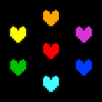
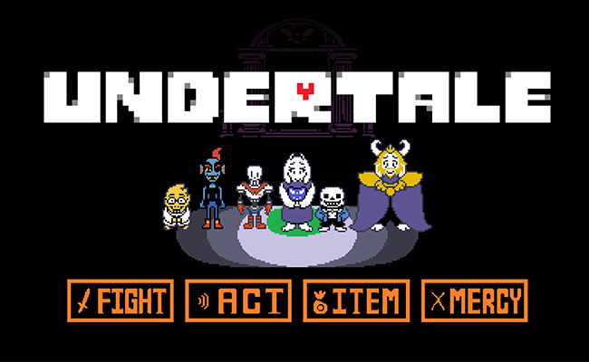
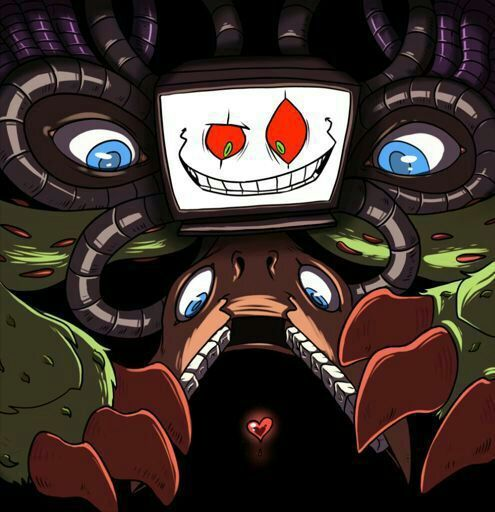

Início
Quiz
Login
Cadastro

História
Fases
Rotas
Almas e Humanos
Amigos
Chefes
Rotas
As rotas de Undertale são os caminhos narrativos que o jogo assume com base nas escolhas do jogador durante a aventura — especialmente em relação aos encontros com monstros. Cada rota altera diálogos, eventos, personagens, chefes, finais e até a música, tornando o jogo conhecido por sua forte replayability. Em Undertale, cada inimigo pode ser derrotado ou poupado, e essas decisões constroem o tipo de história que o jogador vivenciará. Não é uma escolha feita em um menu: é o próprio comportamento do jogador que determina a rota. Elas tornam Undertale um jogo sobre consequências, onde até a menor escolha deixa rastros no mundo e nos personagens. Junto com sua narrativa e trilha sonora, as rotas tornaram o jogo famoso por desafiar a forma tradicional de se jogar RPGs, valorizando paciência, empatia e responsabilidade.

A Rota Neutra é o caminho mais comum em Undertale e ocorre quando o jogador não segue totalmente os requisitos da Rota Pacifista, mas também não elimina todos os monstros como na Rota Genocida. Ou seja: o jogador pode matar alguns inimigos, poupar outros, ou até poupar todos, mas sem completar todas as amizades necessárias para o final Pacifista Verdadeiro. Essa rota apresenta grande variedade de resultados, já que o final muda conforme quem viveu, quem morreu e até como o jogador agiu nos encontros. Porém, todos os caminhos Neutros compartilham de alguns elementos centrais: - A criança chega ao castelo e enfrenta Asgore, num combate sério e inevitável. - Após a luta, Flowey intervém, elimina Asgore e rouba as almas humanas. - Flowey se transforma em uma criatura monstruosa, levando o jogador ao combate final dessa rota. - Após derrotá-lo, o humano retorna à superfície, enquanto Sans liga para relatar o estado atual do Subterrâneo — que varia de acordo com as escolhas feitas. A Rota Neutra serve como o primeiro contato natural com a história completa do jogo e prepara o caminho para o final Pacifista Verdadeiro, revelando detalhes do mundo e dos personagens sem fechar totalmente a narrativa.
A Rota Pacifista é considerada o final “verdadeiro” e mais positivo de Undertale. Para alcançá-la, o jogador deve não matar nenhum inimigo durante todo o jogo e, além disso, fazer amizade com personagens principais como Papyrus, Undyne e Alphys. Depois de concluir uma Rota Neutra sem mortes, o jogador pode acessar o conteúdo extra que leva ao final Pacifista Verdadeiro. Nessa rota, a história revela seu lado mais emocional e profundo: - O jogador descobre a origem de Flowey, que é a reencarnação de Asriel Dreemurr, filho de Asgore e Toriel. - As relações entre os personagens se fortalecem, mostrando que amizade e empatia podem mudar o destino do Subterrâneo. - Durante o clímax, Asriel assume sua forma de Deus da Hipermorte, e o jogador o enfrenta em uma batalha cheia de simbolismos. O desfecho mostra Asriel destruindo a Barreira não pela força, mas ao recuperar sua humanidade e liberar todas as almas. Com isso, os monstros são finalmente libertados e podem viver na superfície. O final pacifista encerra o jogo com uma mensagem de esperança, reconciliação e novos começos.
A Rota Genocida é o caminho mais sombrio, difícil e impactante de Undertale. Ela ocorre quando o jogador decide matar deliberadamente todos os monstros de cada área, esvaziando completamente o Subterrâneo até que o jogo exiba a mensagem “No one came…”. Ao contrário das outras rotas, essa escolha transforma não apenas a história, mas também o próprio protagonista. Ao longo do percurso, os personagens passam a agir de forma tensa, desconfiada ou desesperada, percebendo a ameaça que o humano representa. Chefes que antes demonstravam humor ou bondade se tornam sérios e violentos ao tentar impedir o massacre. Os momentos mais marcantes dessa rota incluem: - A batalha brutal contra Undyne the Undying, uma versão extremamente poderosa da personagem, movida pela determinação de proteger o Subterrâneo. - O confronto final contra Sans, considerado uma das batalhas mais difíceis do jogo, onde ele tenta punir o jogador por todas as mortes cometidas. No final, o humano elimina até mesmo Asgore e Flowey. É então que Chara, a primeira criança humana, se materializa e assume o controle, oferecendo destruir o universo como ato final. Se o jogador aceita, as partidas futuras ficam permanentemente corrompidas, e mesmo finais pacifistas passam a carregar consequências sombrias. A Rota Genocida mostra o lado mais pesado de Undertale, reforçando o tema central do jogo: toda escolha tem consequências — e algumas não podem ser desfeitas.